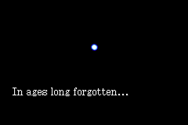

Shining Force - Resurrection of the Dark Dragon (USA)
Battery Save Save Format Spec gbakit Built-In Debug Menu Patch 💾 MultiBoot
Cartridge Identity
- Game Code
AF5E(FamilyAF5)- Header Title
SHININGFORCE- Maker / Revision
EB/ rev0- ROM Size
- 8.0 MiB (8,388,608 B)
- Save Media
None / Unknown- SHA-256
33bcb4f2b359118726e7ca0e4dae4917886d7e8faa7bfb684061cbd0f8812a02- Engine / SDK Group
comm-001(196 families)
Screenshots


Debug Menu Re-Enablement Patch (.ips)
Download AF5E-debug.ips (26 B IPS / 8 B delta)
- Hook Mechanism
state_jump_table_ptr· Replace scene-factory jump-table boot slots (0x0800b420 & 0x0800b424 -> bl 0x08002700) with DebugMenuScene constructor stub (0x0800b4cc -> bl 0x08000778)- IPS SHA-256
c6c83a01b7f4c3efbb3ac1d9f24d29b6dd65f2bf343057b61c127538500e5550
gbakit patch apply AF5E-debug.ips original.gba patched-debug.gba

Link Cable & Multiplayer Communications
This title contains detected communication capabilities: 💾 MultiBoot.
Detailed protocol specifications, SIO registers, Joybus commands, and MultiBoot sequences are documented in the Link & Multiplayer Reference.
- Single-Cart MultiBoot
- Single-Cartridge MultiBoot (Download Play) client/server handler · Thumb SWI 0x25 (
0xDF25):0x0893dc,0x0fac00,0x1022b8,0x10e1c8
Battery Save Format Specification
Open Full Save Format SpecDownload save-format.json
- Specification Coverage
- 3 mapped fields · 0 verified checksum(s) · Confidence: HIGH
- gbakit Built-In Support
- Built-in (AF5E)
gbakit save verify AF5E save.sav
gbakit save decode AF5E save.sav
gbakit save fix AF5E damaged.sav -o repaired.savROM Assets, Compression & Audio
- BIOS Compression
- LZ77 (
0x10): 0 streams · RLE (0x30): 0 streams - ROM Pointer Tables
- 72 tables (0 pointing to validated compressed streams)
- SDK Backup Tags
SRAM_V113
Asset Map (formatkit.asset-map.v1)
Download AF5E-r0-33bcb4f2b3591187.asset-map.json.gz (112,472 B (109.8 KiB)) Verified PASS · 4.19% coverage
| Metric | Bytes / Value | Entries |
|---|---|---|
| Identified | 299,128 B (292.1 KiB) (3.57%) | 918 |
| Mapped | 0 B (0.00%) | 0 |
| Opaque | 52,176 B (51.0 KiB) (0.62%) | 1 |
| Unknown | 8,037,304 B (7.66 MiB) (95.81%) | 901 |
| Total ROM Size | 8,388,608 B (8.00 MiB) | 1,820 |
| Coverage % | 4.19% | — |
| Entries w/ Code Refs | 934 / 1,820 (51.32%) | — |
Top Identified Formats: gfx.gba-palette (916 · 297,632 B (290.7 KiB)) · audio.m4a-song-table (1 · 1,304 B (1.3 KiB)) · gba.rom-header (1 · 192 B)
Largest unknown Extents (Headerless / Custom Asset Candidates)
| Offset | Size | Shannon Entropy | Code Refs |
|---|---|---|---|
0x00421284 | 470,404 B (459.4 KiB) | 6.993 bits/B | 0 |
0x005B3AAC | 345,600 B (337.5 KiB) | 2.846 bits/B | 0 |
0x00646950 | 300,736 B (293.7 KiB) | 7.418 bits/B | 0 |
0x00131330 | 283,308 B (276.7 KiB) | 7.338 bits/B | 0 |
0x00494208 | 247,360 B (241.6 KiB) | 6.966 bits/B | 0 |
gzip -dk AF5E-r0-33bcb4f2b3591187.asset-map.json.gz && gbakit map verify rom.gba AF5E-r0-33bcb4f2b3591187.asset-map.json
gbakit assets export rom.gba --asset-map AF5E-r0-33bcb4f2b3591187.asset-map.json -o out/Text, Fonts & Scene Data
- Primary Text Encoding
- Shift-JIS (uncompressed) · custom 1-byte charmap (base 'A' = 0x48) (
11ASCII strings ·42Shift-JIS runs) - Font & VWF Indicators
- VWF Width Table 1bpp Font · BIOS SWIs: BitUnPack
0x10:12· LZ770x11/12:18· Huffman0x13:7· RLE0x14/15:11 - Scene & Packaging
79ROM pointer tables (≥32 entries,4≥200) ·0relativeu32TOCs ·149OAM metasprite hits
Hardware MMIO Subsystems
ppu_display0x800a2c0,0x800a2dc,0x800a2f0,0x800a31c,0x80204b4,0x805dcf0